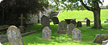
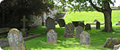

Welcome
The Dean and Chapter welcome you to St Canice's Cathedral, the site of Christian worship since the 6th century. Whether you journey as a pilgrim or a tourist, you enter a hallowed place where the worship Almighty God takes pre-eminence over all other activity.
This Cathedral Church, dedicated to St Canice, houses the memorials of many generations and witnesses in its silent majesty to the glory of God. Apart from its role as a house of prayer, the cathedral is at the heart of the heritage of the vibrant city of Kilkenny. The cathedral is used during one of the national events in the city, the Kilkenny Arts Festival, each August, when the sounds of many voices and instruments delight audiences in the excellent acoustic of the building
The story of the cathedral is, in truth, the story of those who have shaped it, handing down to us this jewel of early Gothic architecture.
Visit the Cathedral and drink of its serenity. It is our prayer that, as your eyes take in the visual message of this age-old church, your heart may feel the message of Christ, who is the same yesterday, today and forever.
 
